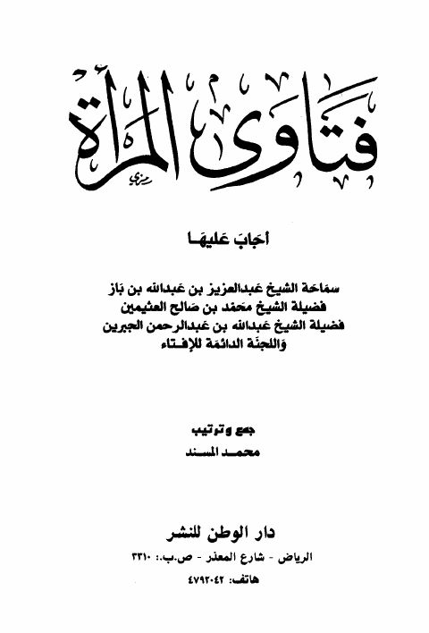

Downloads need an internet connection.
فتاوى العلماء للنساء تحتوي على 185 سؤالا تهم المرأة المسلمة
Authors: عبد العزيز بن عبد الله بن باز محمد بن صالح العثيمين
Publishers: دار الوطن للنشر
▫️ العنوان: فتاوى العلماء للنساء تحتوي على 185 سؤالا تهم المرأة المسلمة ▪️ المؤلف: #عبد_العزيز_بن_باز • #محمد_صالح_العثيمين ▫️ بلد النشر: الرياض، #السعودية ▪️ الطبعة: 1 ▫️ عدد الأجزاء: 1 ▪️ الصفحات: 134 ▫️ نوع الوعاء: #كتاب ▪️ التصنيف الرئيسي: #المرأة_والمجتمع ۪